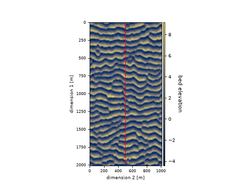
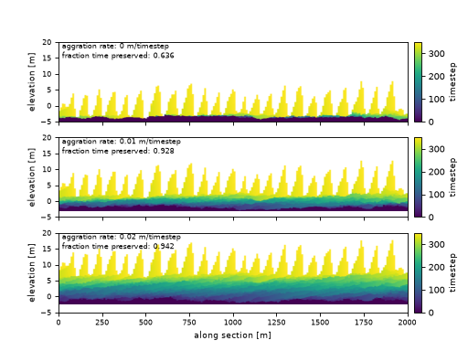

Aggradation and preserved time¶
Suppose we want to compute the effect of background aggradation on the preservation of time in a stratigraphic section. A simple way to do this would be to determine the fraction of model time intervals that are preserved in the stratigraphic section (\(F_t\)) as:
where \(t\) is a time interval in the total number of intervals \(T\) from the model time series, and \(I\) is an indicator function taking a value of 1 if time interval \(t\) is present in the section, and otherwise 0.
We’ll use the aeolian data set as an example here, and do stratigraphic calculation using the compute_boxy_stratigraphy_volume function.
aeolian = spl.sample_data.aeolian()
fig, ax = plt.subplots()
ax.plot([500, 500], [0, 2000], c='r', ls='--')
aeolian.quick_show('eta', ax=ax, ticks=True, colorbar_label=True)
ax.set_xlabel('dimension 2 [m]', fontsize=8)
ax.set_ylabel('dimension 1 [m]', fontsize=8)
ax.tick_params(labelsize=7)
plt.show()
(Source code, png, hires.png)
{kind=link}
{kind=link}

Using the compute_boxy_stratigraphy_volume function allows us to augment the bed elevation time series with a background aggradation.
# define rates, in m/timestep
agg_rates = [0, 0.01, 0.02]
fig, ax = plt.subplots(
len(agg_rates), 1,
sharex=True, sharey=True)
for i, ar in enumerate(agg_rates):
# set up the aggradation array
agg_array = np.tile(
np.linspace(0, aeolian.shape[0]*ar, num=aeolian.shape[0]).reshape(-1, 1, 1),
(1, aeolian.shape[1], aeolian.shape[2]))
# compute stratigraphy for elevation timeseries plus aggradation
vol, elev = spl.strat.compute_boxy_stratigraphy_volume(
aeolian['eta']+agg_array, aeolian['time'],
dz=0.1)
# section index and calculation for preservation
sec_idx = aeolian.shape[2] // 2
sec_data = vol[:, :, sec_idx]
sec_data_flat = sec_data[~np.isnan(sec_data)]
fraction_preserved = (len(np.unique(sec_data_flat)) / aeolian.shape[0])
# show a slice through the section
im = ax[i].imshow(
vol[:, :, sec_idx],
extent=[0, aeolian.dim1_coords[-1], elev.min(), elev.max()],
aspect='auto', origin='lower')
cb = spl.plot.append_colorbar(im, ax=ax[i])
cb.ax.set_ylabel(aeolian['time']['time'].units, fontsize=8)
# label
ax[i].text(
20, 15,
(f'aggration rate: {ar:} m/timestep\n'
f'fraction time preserved: {fraction_preserved:}'),
fontsize=7)
for axi in ax.ravel():
axi.set_ylabel('elevation [m]', fontsize=8)
axi.set_ylim(-5, 20)
axi.tick_params(labelsize=7)
ax[i].set_xlabel('along section [m]', fontsize=8)
plt.show()
(Source code, png, hires.png)
{kind=link}
{kind=link}
